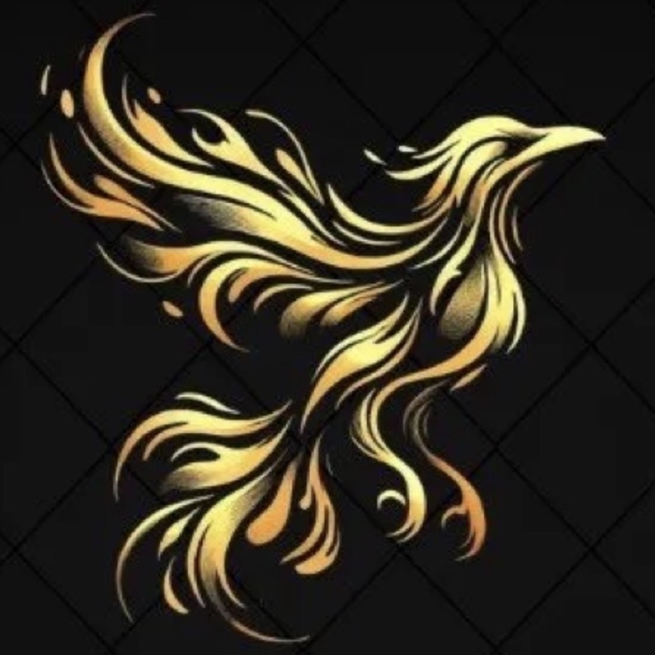

《火神信仰與祈禱手冊》
簡介
火神，又稱烏鴉神，是所有火焰以及任何將火焰視為淨化與重生之力的人的守護神，祂通常以彩虹鳥（烏鴉）或火焰本身的形象顯現於世間。祂代表著拋掉舊的事物以為新的事物排除阻礙。
起源
遠古時期，彩虹鳥擁有七彩炫目的羽毛以及嘹亮優美的歌聲。當時火焰只存在於天上而人間並不可得，彩虹鳥不忍心人類生活於寒冷中，因此飛至天上並口銜燃燒的植物回到人間。彩虹鳥繞著地球飛行一周，將火焰傳播至世界各地，以為人類所用。途中火焰燃燒而起的煙霧將祂的羽毛燻成黑色，並灼傷了祂的喉嚨，使祂再也無法發出悅耳的歌聲。後人便將其稱作烏鴉，並且尊其為火神。
禱詞
「火焰是淨化，火焰是祝福，火焰是重生。」
手勢
豎起食指、中指及無名指，象徵火苗，同時也代表三句禱詞。比出手勢並將手心貼於胸口，代表「火焰常在我心」，可用於祈禱、上對下、平輩之間、下對上，及日常皆可使用；比出手勢並將手背貼於額頭，代表「火焰賜予你我力量」，只可用於上對下，為祝福之意。
徽記
彩虹鳥口銜燃燒的植物，披覆著焦黑的羽毛，唯有尾巴末端還保留著七彩的顏色。神像應以黃金打造。
教義
詳見《火神教義》。
日常活動
信眾需對火焰抱持敬畏之心，將每次燃燒都視作火神的顯現，並感謝祂在萬物中燃燒著帶給生命能量之火。
此外，火神教提倡食用生食。為感念並力行彩虹鳥散播火焰的精神，除了燃燒作為信仰的表達之外，火神教也倡導將火焰留給需要的人，以食用生食去體會無火可用之人的處境，並體現彩虹鳥悲天憫人的精神。詳見《火神信眾日常活動守則》。
聖日與曆法
火神教聖日為每年公元八月十七日。曆法一年分為12個月，每月30日，共計360日。每年首日公元八月二十二日。
祭典
祭典自每年聖日起計，為期五至六日。祭典所用之日並不計入曆法。祭典首日將點燃巨大火柱，並在祭典期間維持不滅。參與祭典者將在首日一同食用生肉，對火神過去一年的守護表達感謝。詳細流程請見《火神祭典守則》。
組織與稱呼
火神教派稱為「火與焰」，必須由一位兼具品格、誠心、努力、謹慎之人領導，稱作「偉大的使者」。信眾通過「火行誓言」儀式的試煉後，能夠獲得「使者」頭銜。使者擁有領導信徒、主持祭典等資格。一般未經儀式試煉的信眾則稱為「信徒」。儀式詳見《火神儀式指引》。